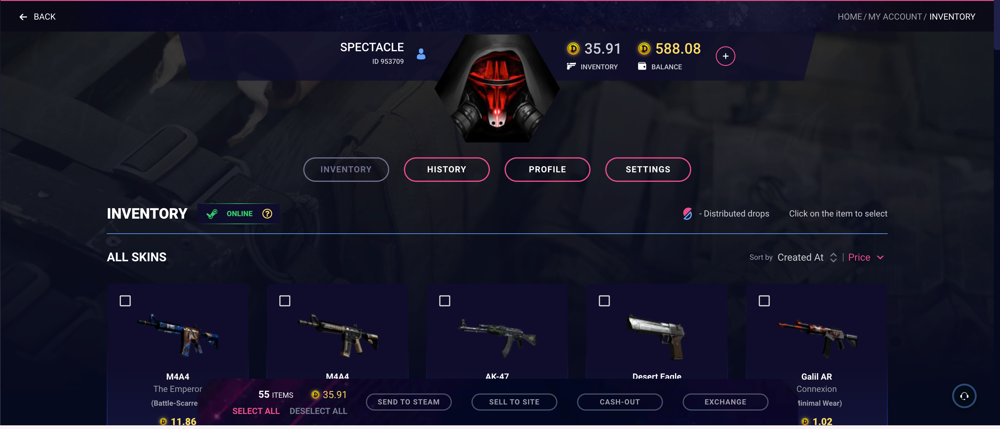
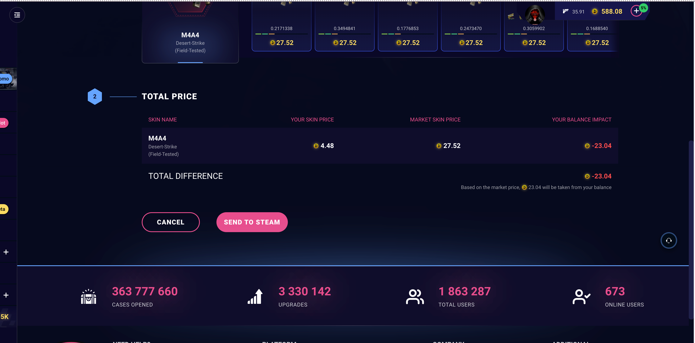
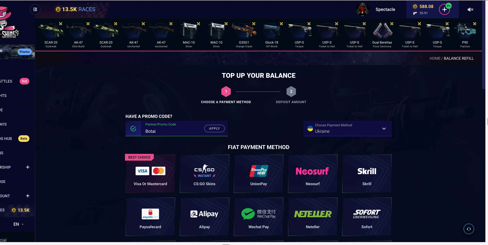
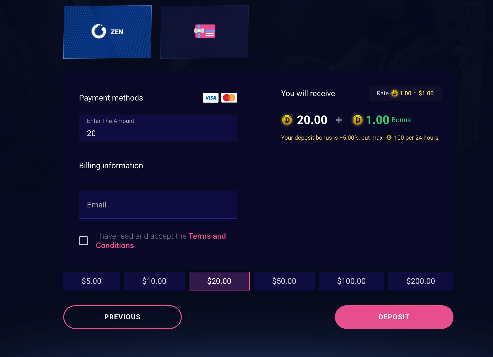
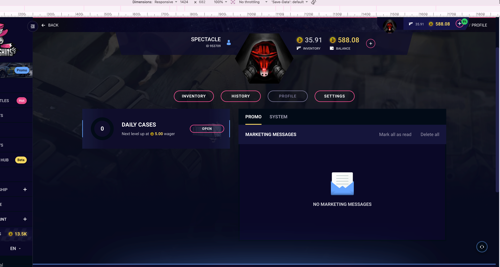
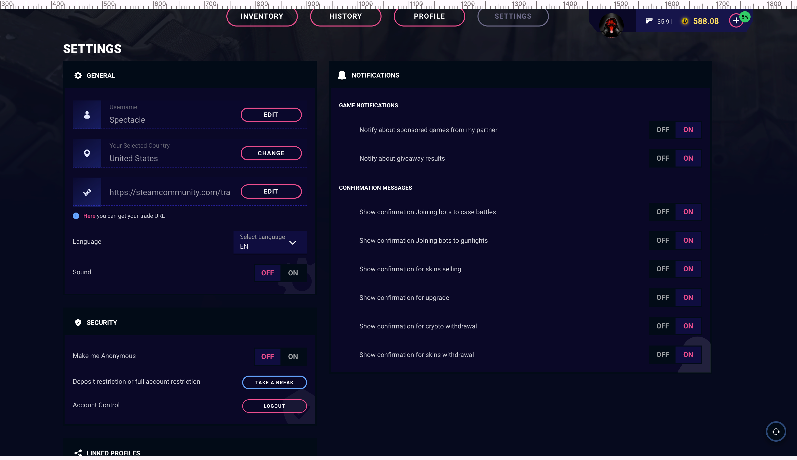
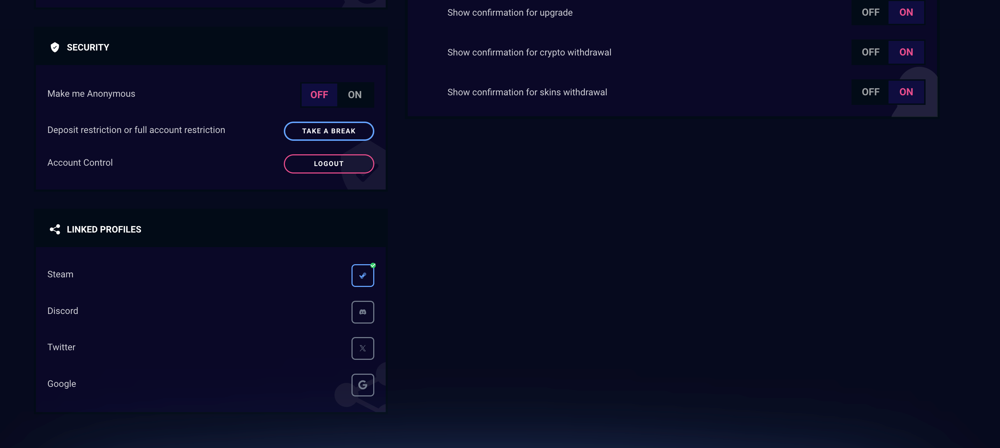
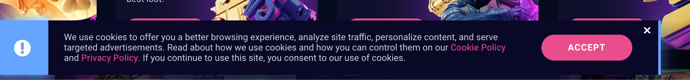

Baseline behind the account
Nineteen screenshots captured by the founder on 18 August 2026 and filed in research/screens/baseline-account/. Admitted as a source by the CLAUDE.md rule of the same day: the founder captures the signed-in surfaces, files dated screenshots, and from then on they are a source in the same class as a walked page. Nothing here is model memory and nothing is inferred from a competitor.
The account shell, and the two money figures are exactly ours
Breadcrumb HOME / MY ACCOUNT / INVENTORY. The header is one unit and it carries two figures side by side.
The money rule of node 0.1, live, in the canon
| Figure | Label under it |
|---|---|
35.91 | INVENTORY |
588.08 | BALANCE |
CLAUDE.md fixes it as "two figures, balance and value of items held, both in real currency, never summed and never a score". The baseline runs the same two figures with the same relationship. The one divergence stays the denomination, C1: theirs are in coins. Amended 19 August 2026: D-28 reversed C1 and took the coin, so this is no longer a divergence at all. What was walked here is unchanged; the sentence that called it a divergence was an inference and it is corrected rather than deleted. A round + beside them is the deposit entry, carrying a 5% badge.

Four tabs are the whole account, and our map splits them differently
INVENTORY, HISTORY, PROFILE, SETTINGS, as four peers on one page. Our map makes 5.1 account and inventory the node and pushes the rest into it as states. That is a structure decision 5.1 has to answer rather than inherit silently.
Inventory, and four exits where our map has one
Sticky action bar at the foot of the grid, carrying a count and a sum.
The bar reads: 55 ITEMS · 35.91 · SELECT ALL / DESELECT ALL · SEND TO STEAM · SELL TO SITE · CASH-OUT · EXCHANGE. With four items selected it reads 4 ITEMS · 11.39. The count and the value of the selection are the same pair as the header.
Block header carries a Steam connection state as a green ONLINE chip, a legend "- Distributed drops", and the instruction "Click on the item to select". Sort by Created At or Price. No filters, no search.
Four exits, and our round 1 has one
sitemap.md gives 5.1 a single route, to 5.3 withdrawal. The baseline offers send to Steam, sell back to the site, cash out to money, and exchange for another skin.
Only the first is in our round 1. The other three are not competitor features to be dismissed: they are the live product's answer to what a person does with a skin they do not want, and 5.1 currently has no answer at all.
The item card, and what it adds to node 0.6
Image, weapon, skin, wear in parentheses, price, then a two column foot: Starting at: and Offers:.
| Item | Site price | Starting at | Offers |
|---|---|---|---|
| M4A4 The Emperor (Battle-Scarred) | 11.86 | 51.50 | 86 |
| M4A4 Desert-Strike (Field-Tested) | 4.48 | 27.52 | 124 |
| AK-47 Emerald Pinstripe (Field-Tested) | 4.28 | 1.94 | 873 |
| Desert Eagle Naga (Field-Tested) | 1.61 | 1.84 | 314 |
| Galil AR Connexion (Minimal Wear) | 1.02 | 0.77 | 191 |
| ST Glock-18 Off World (Minimal Wear) | 0.84 | 0.91 | 81 |
| Dual Berettas Heist (Field-Tested) | 0.59 | 0.87 | 60 |
| SSG 08 Blue Spruce (Field-Tested) | 0.03 | 0.00 | 0 |
| Sticker, huNter Antwerp 2022 | 0.02 | 0.00 | 0 |
Three things this settles
1. StatTrak is a prefix on the name, an orange ST before the weapon. Field 5 of 0.6 is inherited, and its rendering is inherited too.
2. The card already carries a market reference and a liquidity signal, "starting at" and an offer count. Our field 12 asks for a market price with an as-of and an outbound link. The baseline has the price and the depth and has neither the timestamp nor the link. That is the gap A1 exists to close, and it is now measured.
3. The site price is not a discount on the market price. It goes both ways. Four of the nine rows have a site price above the market start, and two have no market at all. A card design that assumes the market number is always the bigger one is wrong on this data.
Selecting one card reveals three actions on it, SELL, SEND TO STEAM, EXCHANGE, plus a share control top right. So the share of a single owned item exists in the live product, which is the object node 7.1 was created for.
Five histories, not one
INVENTORY · DEPOSIT · WITHDRAW · CASH-OUT · CS:GO SKINS DEPOSITS. Each prints its own item count.
Inventory history renders as cards, 50 items, each with a status ribbon across its head: observed SOLD and PENDING. The ribbon is a word, not a colour alone.
Deposit history renders as a table, 17 items: ID, AMOUNT, METHOD, STATUS, TRANSACTION ID, CREATED AT. Statuses REJECTED and COMPLETE. Methods skinsback and an ethereum mark. Timestamps to the second. Rows span 2022 to 2026.
Three of the five empty states say only "History is empty..."
No explanation, no route, no next step. That is the pattern nodes 0.5 and 3.2 refuse, and three of five histories in the canon do exactly it.
Node 5.3 is specified with named states and a published ceiling, G1 and G2. The baseline's withdraw history is empty in this account, so its state vocabulary stays [?].
Send to Steam, and this is the most important screenshot in the set
Two numbered steps on one page. The instruction is printed at the top, verbatim: "Choose any of the offers below for the skin withdrawal. Your balance amount may be increased or decreased, based on the market price selected".
Step 1 puts the selected skin on the left showing two prices on one card: 4.48, what the site says it is worth, and a Steam-badged 44.87 beside it. On the right, market offers with a From and To filter and a search. Each offer card carries a green -39% badge, a float printed to seven decimals, a three-segment band bar, and a price. Observed floats: 0.2171338, 0.3494841, 0.1776853, 0.2473470, 0.3059902, 0.1688540. Every offer shown is priced 27.52.
| SKIN NAME | YOUR SKIN PRICE | MARKET SKIN PRICE | YOUR BALANCE IMPACT |
|---|---|---|---|
| M4A4 Desert-Strike (Field-Tested) | 4.48 | 27.52 | -23.04 |

The arithmetic closes exactly, and it is worth stating out loud
27.52 − 4.48 = 23.04, so you pay the difference between what a real copy costs on the market and what the site says your win was worth. And 27.52 ÷ 44.87 = 0.613, which is the -39% badge: the offers are market copies priced 39 percent under the Steam price.
What this means for our map, and it is not small
1. Withdrawal on the baseline is a purchase, not a delivery. The item you won is a credit note, and taking a real skin out costs the difference. Nothing in cjm-to-be.md, in sitemap.md or in node 5.3 models this. Our whole withdrawal story assumes the thing you won is the thing you receive.
2. B7-1 is not a perception problem here, it is the product. The barrier reads: the gap between what a win appears to be worth and what it is worth. On this screen that gap is a number printed by the product itself, and in the observed row it is five times the value of the win, and a copy of it costs six times what the win was credited at (23.04 / 4.48 = 5.14, 27.52 / 4.48 = 6.14). The earlier wording said the difference was six times, which is the market price's ratio rather than the difference's.
3. Float is shown, and at the only moment it decides anything. Entity 4 marks float [?] and field 15 of 0.6 is carried as [ORPHAN] because no job in our list needs it. Choosing between six copies at the same price is exactly a job that needs it.
4. This is the strongest argument in the project for A1, two prices on one item. The live product already prints two prices, at the moment of withdrawal. Ours prints them at the moment of the decision to spend, which is one screen earlier and the whole point.
Deposit, node 4.1, captured the same day in a second batch
Breadcrumb HOME / BALANCE REFILL. Two numbered steps, and step 1 turns into a green tick carrying the chosen method's name.
Step 1: a partner code already applied, a country that filters the grid, and twenty five methods
Above the grids: "HAVE A PROMO CODE?" with a Partner/Promo Code field pre-filled with a partner code, a green tick and an APPLY button. Affiliate attribution is surfaced at the moment of funding, already applied. Beside it a country selector labelled Choose Payment Method, and the method grid is filtered by it.
| Group | Count | Methods, as named on the tiles |
|---|---|---|
| FIAT | 17 | Visa Or Mastercard, carrying a BEST CHOICE ribbon; CS:GO Skins, marked INSTANT; UnionPay; Neosurf; Skrill; Paysafecard; Alipay; Wechat Pay; Neteller; Sofort; Google Pay; Apple Pay; Wise; Gift Cards; GrabPay; Fawry; Volet |
| CRYPTO | 8 | Bitcoin, Ethereum, Litecoin, Tether, Tron, Xrp, Solana, and an Other tile carrying seven more marks |
Twenty five funding routes on one screen, and our node 4.1 was drawn against a method list that is [?]. It now has a real one, and the shape of the problem changes: the design question is not which providers to show, it is how a person chooses among twenty five without a recommendation, and the baseline answers it with one ribbon on one tile.

Step 2, card: the rate is published, and so is the bonus
Left, the form: payment marks, Enter The Amount, an Email under "Billing information", and a checkbox "I have read and accept the Terms and Conditions", unchecked. Six presets, $5 to $200.
Right, what you get: Rate 1.00 = $1.00 · 20.00 + 1.00 Bonus · "Your deposit bonus is +5.00%, but max 100 per 24 hours".
This corrects our own framing, and the correction makes the claim narrower and truer. sitemap.md says "the baseline prices cases in coins with no visible conversion rate". On the spending surfaces that is true. At the deposit step it is false: the rate is printed. The honest version: the rate is published once, where money enters, and never again on any surface where money is spent. C1 deletes the denomination for exactly that reason, and the reason is now precise rather than approximate.
And the header badge is sourced. The bonus is a standing +5.00% with a cap, and the + control in the header carries a permanent 5% badge advertising it. Node 0.1 specifies that control with no badge. That divergence now has a source.

Crypto: an address per network, a live rate, a minimum, and a precondition state
A network dropdown, a QR, a crypto address with COPY, then Current deposit rate: 1 BTC = 64,185.74, Promo bonus: +5.00% and "Attention! Minimal deposit 0.0001 BTC". There is no amount field: the person sends what they send, and the rate at the top is what it converts at.
The Solana screen is the state worth keeping: the same screen with the QR blurred out and an overlay, "In order to continue you need to create your solana wallet address", with a CREATE NEW ADDRESS button. The deposit address is generated per network on demand, and until it exists the screen shows the shape of itself with the payload removed rather than an error.
Gift cards leave the product
Six accordions, DIFMARK, PULSE, KINGUIN, OFF GAMERS, KARTE DIREKT, ENEBA, each with denominations from $5 to $200 and a BUY ON DIFMARK style outbound control. One of the twenty five funding routes is a set of outbound purchases on six third party resellers, and nothing says what happens after, how long a code takes to credit, or who to ask if it does not.
What the deposit screens do not say, and it is the whole of C3
No crediting time is published anywhere in this flow. Not on the card form, not on the crypto screen, not on the gift card accordions. Row C3 requires a named crediting window and node 4.1 builds a state on it.
And the deposit history makes that absence expensive. Seventeen rows, and the most common status is REJECTED, on skinsback deposits of 1.00, across 2024, 2025 and 2026. A person meets a rejection with no published window to measure it against and no route from the history row to an explanation. That is B4-3 and B8-3 in one table, and it is now a walked fact.
Two self-declared countries in one account, and they disagree
Settings reads "Your Selected Country: United States". The deposit country selector, in the same account on the same day, reads Ukraine.
So the live product carries two independent self-declared country values and does not reconcile them. One filters payment methods, the other sits in the profile, and neither is evidence of anything. Node 0.12 can now cite a walked contradiction rather than argue from the terms clause alone, and D-23's allowlist has a concrete failure mode to be measured against: a market control the person sets twice, differently, in two places.
Profile, and the daily ladder gets its number
A card headed DAILY CASES: a ring with 0 in it, the line "Next level up at 5.00 wager", and an OPEN button. This answers one of the four questions the shot list could not: the wager cost of the next tier is 5.00, and available cases sit at zero until it is met.
And it names something D-25 did not know it was buying. The ladder is not only a home page block: it has a second rendering in the account. Node 1.0 rule 1 of section 2.5 keeps the ladder off responsible play surfaces. The profile is not one of those, so this is legal under the rule as written, and it is recorded so the second rendering is a decision rather than a discovery at stage 04.

Settings, and the responsible play tool that exists and cannot be found
Two columns: General, Security and Linked profiles on the left, Notifications on the right.
The correction this forces, and it is the most useful finding in the set
The baseline record said "Responsible play: zero". The search was right and the conclusion was wrong. The tool exists.
It is called TAKE A BREAK, it does deposit restriction or full account restriction, and it is the second row of the SECURITY block inside the settings tab of the account.
What is actually true, stated precisely: there is no responsible play page; there is no route to the tool from anywhere, not the footer, not the rail, not the header, not the home page, all four re-checked on 18 August 2026; it is filed under Security beside Logout and an anonymity toggle, which is the vocabulary of account protection rather than of self protection; and a person who does not already know it exists cannot find it.
So the finding is stronger than the absence would have been. An absence can be answered with "nobody in the category has it". This cannot: they built it and then filed it where nobody looks.

The geo control is a dropdown the person sets themselves
"Your Selected Country: United States" with a CHANGE button. Together with the terms clause found on the second public walk, "services exclusively to residents of countries where such activities are not prohibited", this is the entire market control of the live product: the person declares their own country and can change it at any time.
D-23 chose an allowlist closed by default. The distance between the two is now fully documented, and node 0.12 can cite a walked control rather than an inference.
What else is in there
General: username, country, Steam trade URL with a helper link, language, sound. Security: Make me Anonymous, Take a break, Logout. Linked profiles: Steam linked with a tick, then Facebook, Twitter and Google, unlinked, which confirms the four providers found in the sign-in modal.
Recaptured 22 August 2026, and one row is different

Facebook is gone and Discord is in its place, labelled and glyphed as Discord: Steam, Discord, Twitter as the X mark, Google.
Neither record is corrected, because both are right on their own date. The 18 August shot says Facebook in words and shows the Facebook mark; the 22 August shot says Discord in words and shows the Discord mark. The live product changed between the two dates, which is the case the dating rule exists for: a source with a date survives the thing it describes changing, and a source without one becomes wrong silently.
And our own D-55 shipped the newer set four days before it appeared here. It chose Steam, Google, Discord and X on 21 August from three competitor modals, not from this product. What was a divergence from the baseline on 21 August is a match to it on 22 August, recorded as a coincidence rather than as a source.
Everything else in the two shots matches this section row for row, twenty rows in four groups, with Sound now reading OFF and Make me Anonymous reading OFF, both of which are account state rather than product structure.
These twenty rows are the input node 5.11 was waiting for, and it had been waiting on a source that already existed. One of them survives round 1. D-81.
Notifications: two game toggles, and six confirmation toggles: joining bots to case battles, joining bots to gunfights, skins selling, upgrade, crypto withdrawal, skins withdrawal. So a confirmation dialog family exists, six of them by name, and none was captured. Node 0.5 has a list to build from.
Two corrections this capture forces, and they are the same class of error
| Record | What it said | What is true |
|---|---|---|
baseline.md section 6 | "Responsible play: zero... no route anywhere in the inventory" | A tool exists, TAKE A BREAK, with no route to it. Corrected in place, both readings kept |
baseline.md section 9.3, the second walk | "There is no cookie consent... no banner, no dialog, no drawer" | A cookie banner exists. The second walk read a browser that had already accepted it, so the DOM probe was accurate and the conclusion was wrong. Corrected in place |
The rule that comes out of both
A probe answers the question it was given. "Is there a cookie element in this DOM" and "does this product have a cookie consent" are different questions, and one browser profile cannot answer the second. Any state remembered per browser or per account is captured on a fresh one from now on.

Still [?] after this capture
Four of the twenty three shots did not come back, and what they would have answered is named rather than filled.
| What | Why it matters | How it gets answered |
|---|---|---|
| The deposit flow | Node 4.1 is specified with a crediting window C3 and a published timer. The history proves the methods, skinsback and ethereum, and that a REJECTED state exists and is common | A capture of the + control and its screens |
| The open and the reveal | The single most important sequence in the product for design principle 2, and no frame of it exists in this repository | Before, during and after one open |
| Identity verification | Node 2.7. Nothing in the settings suggests it exists at all, which is itself a finding but not a confirmed one | Search the account for any KYC step |
| Toasts and errors | Node 0.5. Six confirmation dialogs are named in the settings and none was captured | One capture of any confirmation dialog |
| The withdraw state model | G1 names states and a per-state timer. The baseline's withdraw history is empty in this account | A capture from an account with a withdrawal in it |
| Whether the 18+ checkbox is enforced | Carried from the second public walk | Stays [?]. Testing it means creating an account |